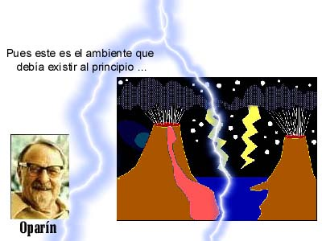
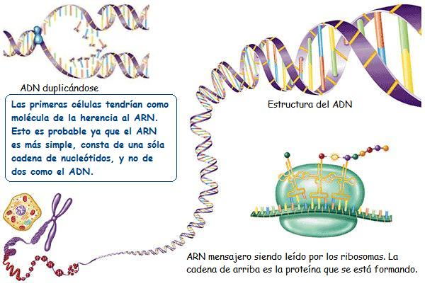

La célula viva —de hecho la propia vida— se equilibra entre la muerte que aguarda a todas las formas mortales y el mundo no viviente de la naturaleza prebiótica de la cual surgió. La célula, envuelta en una membrana, universalmente la estructura que surgió como el portador patrón del estado vivo en la Tierra es —a pesar de las visiones ingenuas de ciertos materialistas del siglo XIX— más que un saco de productos químicos, a pesar que las sustancias químicas son realmente todo lo que ella contiene. Así mismo, no hay ninguna “fuerza vital” para animar sus átomos a la vida, o para dejarlos muertos al partir. La célula viva es un sistema dinámico, en cambio constante en el cual las sustancias químicas se tornan ordenados por un tiempo en estructuras microscópicas, tan solo para disolverse nuevamente cuando otras moléculas se juntan para formar los mismos tipos de estructuras nuevamente, o para sustituirlas nuevamente en la misma estructura. Las organelas de las cuales las células están hechas no son más estáticas que la llama de una vela. En cualquier instante, la vela exhibe un patrón dinámico de casamientos y divorcios químicos, de procesos que producen energía y procesos que la consumen, de estructuras formándose y estructuras desapareciendo. La vida es proceso no una cosa.
¿Cómo ese proceso ordenado llegó a existir? Una vez que la célula es una entidad altamente ordenada y no aleatoria (evitando, la torpe regularidad de un cristal), se puede pensar en ella como un sistema que contiene información 1. La información es un ingrediente que adicionado, trae a la vida lo que serían átomos no vivos. ¿Cómo - nos preguntamos-la información puede ser introducida sin una inteligencia creativa sobrenatural? Este es el problema que la ciencia aún tiene que responderse, lo que colocaría a Dios en la categoría de completamente desempleado.
Los científicos que buscan dar cuentas del contenido de información de las células vivas se ven enfrentados con el hecho que la información y la apariencia de diseño también pueden encontrarse en la naturaleza no viva, en sistemas que ninguna adulto supondría seriamente que es evidencia de un diseño inteligente. Los patrones y filigranas que se forman en nuestras ventanas en invierno son atribuidos por los niños, a los esfuerzos inteligentes de Jack Frost (un personificación del frío), pero aquellos de nosotros mayores de diez años de edad sabemos que la habilidad de formar estas hermosas figuras están en la propia naturaleza del agua. La “información” sobre como formar estructuras intrincadas de cristal es inherente a la estructura submolecular del agua, del modo como los electrones orbitan los átomos de hidrógeno y oxigeno que los constituyen. La sustancia más simple que contiene información, junto con lo que frecuentemente parece ser un programa diciendo interactuar con el mundo. En el caso de los sistemas vivos, la cantidad de información y programación que direcciona los patrones encontrados en las moléculas individuales está aumentado en grado gigantesco. Aún así la célula entera puede ser considerada como un sistema conteniendo información, de hecho es que la mayoría del contenido de la información de una célula está presente en la forma de moléculas informativas gigantes como el ADN (que contiene la “receta” para hacer un organismo entero de un tipo en particular) o las enzimas (proteínas que pueden ser vistas como herramientas moleculares con las cuales la receta almacenada en el ADN es traducida en acciones).
Se argumenta con frecuencia que las leyes de la probabilidad van contra la idea de que las principales moléculas informativas de la célula pudiesen surgir espontáneamente. “Las probabilidades de que una molécula de una enzima pudiese formarse a partir de los aminoácidos adecuados, en la secuencia exacta, es tan pequeña que si usted tuviese diez opciones por segundo, usted no obtendría una molécula de enzima en un trillón de trillones de años” Hay mínimo tres fallas principales en las premisas que fundamentan ese argumento. Primero que todo, que cuando los veinte aminoácidos de los cuales están hechas las proteínas reaccionan promiscuamente los unos con los otros, y que todas las combinaciones posibles tienen igual probabilidad. En verdad, existe una tendencia definida del modo como los aminoácidos mezclados se combinan (polimerizan) para formar péptidos y polímeros semejantes a proteínas. Sydney Fox, uno de los mayores experimentadores que estudian el problema de la biopoyesis (el origen de la vida), relata que “los diversos aminoácidos no se polimerizan aleatoriamente; al contrario, ellos tienen una gran habilidad de auto-instruirse. Las secuencias formadas son altamente específicas… y los polímeros producidos son de una heterogeneidad agudamente limitada… 2” El resultado último de esa tendencia en el modo de cómo los aminoácidos se juntan para formar “proteinoides” (polímeros semejantes a proteínas que se forman espontáneamente cuando las mezclas de aminoácidos secos son calentadas) es que las moléculas capaces de catalizar reacciones biológicamente útiles ( o sea, los tipos de reacciones ahora catalizadas por enzimas) tienen mayor probabilidad de formarse que las moléculas incapaces de actividad enzimática. La química orgánica tiende a favor de la vida.
El segundo problema es que el argumento falla al comprender el papel de la selección natural operando al nivel molecular. Es de conocimiento común, por ejemplo, que la probabilidad de conseguir una mano perfecta en bridge es extremadamente pequeña. Pero, si la persona pudiera “seleccionar” todas las espadas de la primera distribución de cartas, y devolver las cartas indeseadas al tallador (junto con las cartas de las otras tres manos), una y otra vez, cada vez dejando las favorables y devolviendo las no deseadas, en poco tiempo se obtendrá “una mano perfecta”. Cuando la selección natural opera a nivel celular en las protocélulas (estructuras semejantes a células pero que no son capaces de controlar sus capacidades reproductoras o de garantizar la transmisión hereditaria de información con pocos errores), cualquier “paso en la dirección correcta” tenderá a conservarse, y cualquier paso en dirección errada tendrá que volver al “tallador”.
La tercera falla, la más seria en los argumentos que con frecuencia se dan contra la posibilidad de un origen natural de las moléculas informativas, es la presunción de que la molécula en cuestión (por ejemplo, una enzima catalasa) debe ser idéntica a un patrón moderno altamente evolucionado. Como todas las enzimas, la catalasa es una proteína, una molécula muy grande compuesta de aminoácidos reunidos. Su principal función en las células modernas es romper el peróxido de hidrógeno en agua e hidrógeno. Esto es muy importante, una vez que el peróxido es muy destructivo para la maquinaria molecular de la célula. Además de su estructura de aminoácidos, la catalasa también contiene un grupo hemo, que a su vez se compone de un anillo de porfirinas (ver Figura 6) y un átomo de hierro.
Figura 6. La formula estructural del grupo hemo, el pigmento encontrado en la hemoglobina, la catalasa y otras enzimas (los átomos de carbono ocupan todos los lugares en la estructura donde se encuentran las líneas rectas)
Nosotros podemos admitir inmediatamente que el origen espontáneo de una molécula moderna de catalasa, con sus cuatro conjuntos de 505 aminoácidos unidos en un orden muy específico, es altamente improbable. Pero lo que raramente se nota es que el hecho de que las primeras células no necesitaron de la molécula de catalasa entera (eso si ellas requerían de alguna catalasa, en un ambiente conteniendo muy poco oxígeno libre!).
En las primeras células, teniendo que lidiar con pequeñas cantidades de peróxido, cualquier molécula que pudiese hacer el trabajo de la catalasa en una forma tenue habría conferido alguna ventaja sobre las células que no pudiesen degradar el peróxido. De hecho el propio ión hierro (Fe++) es capaz de romper el peróxido. Si el hierro fuera combinado con un anillo de pirrol (la porfirina 3 “el superanillo” mostrado en la Figura 6 está compuesta de cuatro anillos de pirrol arreglados a lo largo de los lados del cuadrado), su habilidad catalizadora aumenta varias veces. Si el hierro fuese combinado con el anillo de porfirina del grupo hemo, sus propiedades catalizadoras aumentan varias veces en relación con un ión de hierro libre. Finalmente, adicionar la parte proteica de la molécula de catalasa aumenta la actividad en diez millones de veces! 4
Es claro que para que la vida se originase no fue necesario que estuviese presente la catalasa o cualquier otra macromolécula ahora encontrada en las células. Todo lo que era necesario era que hubiesen moléculas capaces de hacer el trabajo de esas macromoléculas - al menos un poquito. Es claro y razonable esperar que las protoenzimas de las protocélulas deberían tener una semejanza química clara con, por lo menos una parte de sus contrapartes en las células modernas, y sería posible mostrar como las enzimas modernas se desarrollarían a partir de estructuras más simples de sus protoenzimas ancestrales. Están siendo descubrimientos en esa área a un paso acelerado.
Las así llamadas rutas metabólicas son realizados por las células actuales para sintetizar materiales necesarios, convertir en alguna forma químicamente útil la energía solar capturada por los pigmentos, y romper tanto materiales brutos y desechos. La comparación de rutas metabólicas de las bacterias, plantas y animales primitivos revela muchas pistas de cómo esas rutas podrían haberse originado. Es bastante claro que las rutas metabólicas evolucionaron precisamente de la manera como ellas trabajan: paso a paso. En ninguna época en la evolución de la vida un camino entero se formó de una sola vez.
La hipótesis heterotrófica
Para entender como las rutas metabólicas se desarrollaron en el curso de la evolución de la vida, es necesario examinar el modo en el que las primeras protocélulas llegaron a existir. El primer análisis detallado de ese problema fue hecho por el bioquímico ruso Alexander I. Oparín en 1924. 5 Oparín fue famoso por su formulación de la así llamada hipótesis heterotrófica. La palabra heterotrófica viene de los términos griegos heteros (“otro” o “diferente”) y trophé (“comida” o “alimento”) y se refiere al hecho de que los primeros seres vivos eran incapaces de sintetizar su propio alimento a partir del dióxido de carbono y el agua del modo como las plantas (“autótrofas”) lo hacen, pero fueron un tanto más dependientes de las fuentes de alimento externas a si mismas. Los animales modernos se denominan heterótrofos secundarios, ya que ellos han perdido la capacidad fotosintética y dependen de comer otros animales y plantas como fuentes de energía y materiales brutos.
De acuerdo con Oparín, las protocélulas (que él pensó habrían sido aglomerados coloidales de moléculas) que se formaron en la “sopa primordial” de complejos orgánicos constituyentes de los lagos y océanos primitivos del mundo. Una vez que se formaron las protocélulas con la capacidad de autorreplicación, ellas se habrían sustentado consumiendo el caldo remanente del cual surgieron. En el inicio, las protocélulas serían capaces de utilizar compuestos complejos 6 que podrían haberse integrado en la estructura de la protocélula sin cualquier otra alteración. A medida que el tiempo pasaba, las complejas moléculas de “alimento” fueron utilizadas, dejando moléculas de menor complejidad que podrían ser usadas con tan solo un cierto grado de modificación química.
Sin embargo, algunos autores han imaginado este estado de la evolución química como una “crisis” en el desarrollo de la vida, y suponen que fue un accidente afortunado en una protocélula afortunada el desarrollo de la habilidad de usar moléculas de alimento un poco más simples “antes que el tiempo las acabase o que ellas muriesen de hambre sin moléculas complejas”, pero la realidad de la química hace la situación menos espantosa. Deberíamos recordar que el punto donde la sopa fue agotada de casi todas las moléculas de alimento más complejos, deberían haber billones de protocélulas. A medida que las moléculas de alimento más deseables se hacían más y más escasas, algunas de las protocélulas deberían haberse desintegrado, volviéndolas a ellas mismas alimento para las protocélulas remanentes aún intactas. Es muy probable que se halla desarrollado un tipo de equilibrio entre las protocélulas que se desintegraban y otras células absorbiendo sus restos y reproduciéndose, hasta que una protocélula en particular adquirió un enzima o dos que la hacían capaz de utilizar un segundo tipo de moléculas menos complejas y aún abundantes en la piscina primordial. Capaz ahora de utilizar una nueva y abundante fuente de alimento, esa nueva protocélula, mutante iría a multiplicarse rápidamente hasta sustituir los otros tipos obsoletos que exigían un tipo altamente complejo de moléculas ahora agotadas en el medio. Mucho tiempo después, el segundo tipo de molécula de alimento se habría agotado, y la competición se habría desarrollado nuevamente, resultando una protocélula que podría utilizar un tercer tipo de alimento químico (aún más simple)
El modelo de aglomerado autosuficiente
¿Podría esto estar vivo?
La sopa primordial en la cual comenzó la vida contiene una larga variedad de complejos orgánicos, variando en tamaño de lo muy pequeño a lo muy grande, ricas en energía. Las moléculas grandes, ricas en energía (tales como el complejo hipotético C es concebido compuesto por dos partes principales L y M. Romper el enlace químico entre L y M iría a liberar energía. Esa energía podría ser usada inmediatamente para unir un grupo fosfato (P) a una molécula de difosfato de adenosina (ADP), una forma de “moneda energética” casi universal en las células modernas. El ATP es un compuesto rico en energía. Muchas de las sustancias en la sopa tendrían que poseer capacidad catalizadora , es decir, la habilidad de acelerar reacciones químicas sin que ellas fuesen usadas en el rompimiento de la molécula de alimento C, con liberación de energía. De modo general ese proceso puede resumirse en la ecuación:
Ecuación 1.
R + C + ADP + P ? R + L + M + ATP
Al mismo tiempo se puede suponer que había en la sopa ciertos complejos que eran autocatalizadores, es decir, capaces de ayudar en la síntesis de más moléculas similares a ellas (Sidney Fox mostró que ciertos proteinoides de hecho facilitan la producción de más proteinoides, aunque no se sabía si el nuevo proteinoide es precisamente igual al viejo). En el siguiente modelo la molécula X’ se concibe como autocalítica, acelerando su propia formación de sus dos complejos principales X & Y, dada una fuente de energía como el ATP (cuando el ATP cede energía, este es degradado de regreso a ADP y un fosfato). De modo general, este proceso se puede resumir en una segunda ecuación:
Ecuación 2: ATP + X + Y + X’ ? ADP + P + X’+ X’
El aglomerado hipotético mostrado arriba se concibe formado por dos fases, una fase matriz compuesta de X’ y una o más partículas del catalizador R. En tal estructura las reacciones químicas descritas en las ecuaciones 1 y 2 podría esperarse que tuviese lugar en la frontera entre las fases, donde las de R hacen contacto con la fase X’. A medida que el aglomerado sintetiza más X’, este crecerá de tamaño hasta hacerse hidrodinámicamente inestable, tras lo cual se quebrará en dos o más aglomerados hijos. Si los aglomerados hijos tuviesen un poco de R, ellos serían capaces de continuar la actividad semejante a la vida del modelo.
Futuras evoluciones del modelo involucrarían la habilidad de romper L y M en productos más pequeños, extrayendo más energía de sus enlaces químicos (el punto final sería alcanzado cuando las moléculas pudiesen desdoblarse hasta el agua y el dióxido de carbono). La evolución también involucraría adquirir la habilidad de sintetizar precursores de las formas X & Y cada vez más simples, hasta el dióxido de carbono, agua, minerales inorgánicos, y la luz del sol fuesen necesarios. Cada uno de esos desarrollos evolutivos exigiría la adición de nuevos catalizadores (proteinoides, pigmentos, iones minerales, etc) en la estructura del modelo de arriba.
A medida que la sopa primordial se diluía en un océano, donde las protocélulas heterotróficas agotaban cada vez moléculas más simples, llegó un punto en el que sería imposible una mayor reducción de la complejidad de las moléculas de “alimento”. En ese punto, nuestras primeras células verdaderas serían capaces de mantenerse con tan solo dióxido de carbono, agua y minerales orgánicos. Esas células se habrían convertido en los primeros autótrofos - organismos sin dependencia de otros organismos, como de la sopa remanente. Esos autótrofos serían capaces de ejecutar la fotosíntesis, capturando la energía del sol y usándola para combinar el dióxido de carbono y agua para formar azúcar. El azúcar, por su vez, sería re-trabajado con complejos inorgánicos con nitrógeno, azufre, fósforo y otros elementos para formar las sustancias necesarias para mantener y mejorar la calidad de lo que en ese punto debía llamarse “vida”.
El origen de la estructura celular
Así como intentamos explicar como los productos químicos de la vida llegaron a existir, tenemos que explicar como surgieron las estructuras celulares cuando disponemos de un exceso de posibilidades plausibles. Parece que hay más posibilidades de las que necesitamos. Oparín estaba impresionado con la habilidad de las proteínas y otras macromoléculas en solución de aglomerarse para formar suspensiones de conjuntos complejos conocidos como coacervados. A medida que esas partículas vagaban absorbían más moléculas de la solución circundante y realmente crecían en tamaño. Cuando alcanzaban cierto tamaño, las partículas se reproducían, a veces por un proceso que recordaba la formación de levaduras, a veces por simple fisión irregular. Los aglomerados hijos, a su vez, crecían, se dividían, crecían y se dividían, hasta que las moléculas de materia bruta fuesen agotadas en el medio. Oparín mostró experimentalmente que muchas enzimas y grupos de enzimas se podían juntar en aglomerados de coacervados y podían llevar a cabo actividades metabólicas -incluso imitando las actividades de caminos metabólicos cortos.
Sydney Fox de la Universidad de Miami, por otra parte, mostró que cuando mezclas de aminoácidos secos son humedecidas, estos se polimerizan en un material semejante a las proteínas llamado proteinoide. Los proteinoides son de gran interés teóricamente porque estos usualmente poseen habilidad catalizadora. Estos no son capaces de catalizar la formación de ácidos nucleicos (ADN o ARN), pero son capaces de catalizar la formación de más proteinoides! En resumen, los proteinoides exhiben una habilidad reproductora primitiva.
Además de poseer habilidades químicas interesantes, cuando los aglomerados entran en contacto con el agua, los proteinoides pueden reunirse en estructuras que sugieren protocélulas. Llamadas “microesferas” por Fox, esas partículas microscópicas también pueden crecer por acreción, proliferar a través de la fisión y ramificarse por varias generaciones hasta el punto de participar en una camunicación interpartículas a través de la transferencia de material 7 .
Los marigránulos, descubiertos por el pescador japonés Fujio Egami 8, también se han propuesto como un modelo de proteocélulas. Egami descubrió que adicionando compuestos simples como formaldehído e hidroxilamina (compuestos formados fácilmente sobre las condiciones de la Tierra primitiva) al agua de mar enriquecida con elementos tales como molibdeno, zinc y hierro, era posible producir no tan solo aminoácidos, lípidos y otros materiales bioquímicamente importantes, sino que además era posible hacer que los aminoácidos se polimerasen en péptidos y materiales semejantes a las proteínas. Mejor aún, si eran dejados por varios meses, el agua de mar que contiene esos polímeros presentaría unas pequeñas estructuras semejantes a las células - los marigránulos. A diferencia de los proteinoides de Fox, los marigránulos están delimitados por una superficie de lípidos semejantes a una membrana. La similaridad de la estructura de los marigránulos con la estructura de las células comunes es un tanto mayor que la de esta con la de las microesferas. Como las microesferas, los marigránulos son también capaces de crecimiento y reproducción indisciplinada. Si bien los marigránulos poseen habilidades catalizadoras, los estados de “metabolismo” de los marigránulos aún no progresado como aquellos de las microesferas de Fox.
Hace un tiempo, en un encuentro anual de la Asociación americana para avance de la Ciencia, David Deamer 9 de la Universidad de California en Davis relató estudios que el realizó sobre materiales extraídos del meteorito Murchison. Algunos de los materiales grasos (lípidos) extraídos del meteorito 10 eran capaces de reunirse en vesículas delimitadas por membranas que se asemejaban mucho a pequeñas células. Como las membranas de las verdaderas células las membranas de Deamer eran capaces de incorporar compuestos como pigmentos, tales como pireno, y exhibían algunas capacidades catalizadoras. Es razonable suponer que membranas como esas, formando estructuras vesículares hechas como resultado de la espuma de las olas, habrían envuelto gotas de coacervados, microesferas proteinoides y marigránulos, y habrían aumentado grandemente la complejidad de las protocélulas. Más importante, tales protocélulas compuestas, delimitadas por membranas serían capaces de ejecutar una gran variedad de tareas químicas diferentes de forma simultánea, debido a las diferentes capacidades de sus varios componentes. La complejidad y propiedades de tales protocélulas llegarían muy cerca de las de las células primitivas.
Quizás la característica más importante de las entidades protocelulares discutidas es que ellas serían capaces de cambio evolutivo a través de la selección natural. Las protocélulas que adquirieron combinaciones útiles de protoenzimas y otros materiales útiles tenderían a sobrevivir, y las protocélulas que no las tuviesen tenderían a disolverse. La fusión de protocélulas capaces - de forma separada - de importantes funciones vitales habrían llegado a formas competentes con un gran potencial de sobrevivencia. Casi ciertamente que el principio de “supervivencia del más apto” es más antiguo que la propia vida.
Los primeros serán los últimos
En todas las formas de vida actuales, el ADN es el depositario de la información hereditaria. Es la información almacenada en el ADN que hace la diferencia entre un hombre, un ratón y un musgo. En las células modernas, el ADN permanece separado de los procesos metabólicos, pasando sus instrucciones al ARN mensajero, el cual conduce la síntesis de proteínas - un proceso que es altamente complejo y que claramente es producto de una larga serie de desarrollos evolutivos. El conjunto de reglas que relaciona el “deletreo” de la molécula de ADN y la secuencia de los aminoácidos de las proteínas se conoce como “código genético” 11.
Es de consenso general que el ADN no estaba presente en las primeras células. Antes del advenimiento del ADN, el ARN podría haber servido como material genético en las primeras células, exactamente como ocurre en ciertos virus. La cuestión que aún permanece es si las células primitivas podrían o no haber existido sin ARN, usando proteínas como principales moléculas de información. Vimos anteriormente que los proteinoides de Fox tenían la habilidad de formar más proteinoides - así teóricamente siendo capaces de formar sistemas autorreplicantes-y ellas podrían haber catalizado la formación del ADN y el ARN a partir de sus bloques de construcción. ¿La vida atravesó una fase de proteínas antes de la evolución del código genético? ¿O las proteínas propiamente dichas (a diferencia de los proteinoides que son ciertas formas más irregulares en su estructura que las proteínas) solo son posibles con un sistema de síntesis dirigido por ácidos nucleicos?
Un gran número de trabajos se han publicado sobre el origen del código genético, y no es posible resumirlo todo aquí. Entretanto, debe mencionarse las impresionantes sugerencias hechas por A.G. Cairns Smith de que el ciclo ADN-ARN-Proteínas de las células modernas fue precedido por formas primitivas que no poseían ninguno de los compuestos bioquímicos principales de ahora son característicos de las células. De acuerdo con Cairns Smith, los primeros sistemas replicantes no eran tampoco orgánicos, eran minerales! Específicamente, estos serían cristales de arcilla autorreplicantes. Sombras de Génesis capítulo dos.
Cairns-Smith deja claro que los cristales de arcilla no solo se replicaban, sino que además podían transmitir información de una generación de cristales a la siguiente. Defectos en los cristales, análogos a las mutaciones, podrían pasarse del cristal padre al cristal hijo. El muestra que un tipo de selección natural puede operar en un tipo de poblaciones de cristales de arcilla, y que los cristales de arcilla pueden fácilmente haber comenzado a crear y usar sustancias orgánicas para estabilizar sus micro ambientes y aumentar sus posibilidades de sobrevivencia y reproducción. Una vez que se conocen varias arcillas que pueden catalizar la formación y la polimerización de aminoácidos, imitar la fotosíntesis y dirigir la formación de ácidos nucleicos, es asombroso - y no forzado— suponer que un montaje de código genético de ARN y proteínas puede haber ocurrido sobre la superficie de un cristal de arcilla y cuando la combinación surgió, esta podría haber subsistido sin la ayuda de un sustrato de arcilla.
Cairns-Smith compara el sistema delicadamente balanceado de ácidos nucleicos-proteínas con un arco. De la misma que un arco no puede mantenerse sin la presencia del fundamento principal, y este no puede mantenerse sin el apoyo del resto del arco, así también en las células vivas los ácidos nucleicos no pueden funcionar sin la actuación de las proteínas enzimáticas, y las proteínas enzimáticas no pueden ser producidas sin la ayuda de los ácidos nucleicos.
Para hacer un arco de piedras es necesario un andamio de algún tipo para apoyar las piedras antes que estas estén todas en el lugar y poderse apoyar las unas a las otras. Es frecuente el caso que un proceso de construcción incluya cosas que están ausentes en el resultado final. De esa forma, en la evolución, se pueden sustraer cosas. Eso puede llevar a un tipo de dependencia mutua de componentes que es una característica resonante de la maquinaria central de control bioquímico. 12
Sea como fuese las futuras investigaciones podrán mostrar cual fue el papel, en el caso de los cristales de arcilla como andamios que permitieron la construcción del código genético, y es bastante claro que el ADN - el primer ministro del gobierno bioquímico-fue en verdad un refinamiento tardío y no hacía parte de las primeras células.
Y llegó el oxígeno…
Los seres vivos más primitivos que podían realizar la fotosíntesis lo hacían sin liberar oxígeno a la atmósfera. No está claro hace que tanto ese tipo de fotosíntesis dominó el escenario primitivo. Hace casi 1,5 mil millones de años atrás, un cierto número de algas fotosintéticas evolucionó, desarrollando una forma nueva y mejorada de fotosíntesis que liberó oxígeno en el océano y en la atmósfera. Para las primeras formas de vida, el oxígeno fue la primera forma de “desecho tóxico”, y la selección natural llevó al desarrollo de enzimas (como la catalasa) que podían proteger a las células de los efectos dañinos del oxígeno 13. Por fin las células adquirieron la habilidad de convertir la adversidad en ventaja y, en verdad llegaron a usar el oxígeno como un medio de “quemar” su combustible (azúcar y otras moléculas simples) que permitían aumentar en gran forma las cantidades de energía con la cual podían ejecutar varios tipos de actividades nuevas. Una tornó posible, gracias a la respiración aeróbica basada en el oxígeno, generar enormes cantidades de energía en períodos de tiempo cortos, las células pudieron volverse móviles, y los primeros animales unicelulares se hicieron posibles.
El movimiento es la esencia de la animalidad, el movimiento significativo era inviable antes del aprovechamiento del oxígeno. Fue la utilización del oxígeno lo que llevó al surgimiento de los heterótrofos secundarios, los animales. No hay almuerzo gratis en la naturaleza, y las primeras células que adquirieron las mutaciones que les permitieron moverse fácilmente en su mundo acuático tuvieron que sacrificar la maquinaria necesaria para hacer fotosíntesis. En lugar de crear su propio alimento a partir de elementos sencillos, ellas podían simplemente engullirse a sus vecinos más lentos y digerirlos a través de las enzimas que habían desarrollado tiempos atrás.
Una vez que el paso de movilidad celular aceleró en la actividad animal el curso futuro de la evolución se tornó más claro, por lo menos en sus contornos generales. Habría una ventaja selectiva para las células que se agrupasen para formar organismos multicelulares, animales tan grandes como para buscar y devorar la vegetación primitiva del ma. Una vez que los animales herbívoros se hicieron abundantes, la selección natural llevaría al surgimiento de los carnívoros -animales que generalmente tienen que ser más móviles (y por tanto más inteligentes) que los herbívoros.
Eso dio inicio a la primera versión de una “carrera armamentista” que continua hasta hoy. Con la selección natural cazando los herbívoros, la selección natural tendería a seleccionar a los herbívoros más rápidos y más expertos, haciéndolos más difíciles de cazar. Esto a su vez provocó la selección de carnívoros aún más rápidos y expertos. Por fin ciertos carnívoros adquirieron la habilidad de usar y hacer herramientas - armas con las cuales tener una ventaja decisiva e irreversible sobre los herbívoros. El oxígeno iría a propiciar un segundo tiempo en la historia de la vida - el descubrimiento del fuego.
El Homo sapiens sería mejor descrito como Homo prometheus, a causa del héroe mítico que robó el fuego de los dioses y lo trajo a la tierra pare el bien de nosotros, los mortales. Así pues la historia humana es, en un sentido profundo, la historia del fuego y de las tecnologías secundarias que generó, y la ciencia es una parte de esa historia. Con el fuego, Sydney Fox calienta rocas magmáticas, las pulverizó con soluciones de aminoácidos, y analiza los proteinoides que se forman sobre su superficie. Stanley Miller pasó chispas a través de atmósferas primitivas para atestiguar la formación de la química de la vida. Las chispas eléctricas, claro está, resultan de corrientes eléctricas generadas a kilómetros de distancia por los fuegos del carbón y el petróleo producidos en las generadoras. Los fuegos de las ciencia brillan fuertemente, gracias al proceso generador del oxígeno desarrollado por humildes algas hace muchos eones -algas que ahora buscamos entender.
La pregunta que Darwin no esperó poder responder - que Newton, Galileo y los genios antiguos no osaron siquiera formular - está próxima a ser respondida. Miles de científicos en cientos de laboratorios se están aproximando al problema del origen de la vida. Es fascinante contemplar el proceso que se ha hecho, a pesar del hecho que el estudio experimental de la biopoyesis es apenas más viejo que la memoria de la segunda guerra mundial. Cuando nací, hace unos 60 años, difícilmente alguien podía sospechar que los productos químicos de la vida serían tan simples y fáciles de producir. Cuando me formé en la facultad, nadie podría haber sospechado la facilidad con la cual las protocélulas y los marigránulos se podrían haber formado en el agua de mar. Y quien podría esperar encontrar la construcción de membranas celulares en meteoritos?
Si la vida como la conocemos es o no el resultado de un “golpe de estado genético” - de sistemas orgánicos suplantando los sistemas autorreplicantes minerales - o sí el código genético tuviese un origen aún insospechado, está por definirse. Pero nosotros conoceremos la respuesta, y esta está muy cercana.
Notas:
- 1
-
Kobayashi, K., et al., “Abiotic synthesis of nucleosides by electric discharge in a simulated primitive earth atmosphere,” Origins of Life and Evolution of the Biosphere, Volume 16, Nos. 3/4 (1986), pp. 277-8.
- 2
-
LA Letra L viene de la palabra latina lævus, ‘izquierda’, y la letra D viene de dexter, ‘derecha.’
- 3
-
Folsome, Clair Edwin, The Origin of Life: A Warm Little Pond, W.H. Freeman & Co., San Francisco, 1979, p. 150.
- 4
-
Schmeck, Harold M., “Clay on Shores of Ancient Seas Viewed as Key to Origin of Life,” The New York Times, Octubre 15, 1977, p. 26C.
- 5
-
Este texto contiene información debido a la forma altamente no aleatoria de la posición en la superficie de los elementos que llamamos letras. si cortásemos todas las palabras, mezclaramos y ubicaramos sobre una página en blanco, la información estaría altamente reducida. si las palabras fueran cortadas en letras individuales la información estaría totalmente perdida. De la misma forma, si una células “contiene” información debido a la manera en la cual sus elementos moleculares están ubicados en el especio y en el tiempo. La manera en la cual el ADN (el material genético de la célula) contiene informaciones - con sus cuatro tipos de “letras” (A, T, C y G) se debe a la secuencia de estas para formar mensajes largo - es exactamente análogo a la manera como esta frase contiene información debido a la forma en la cual las letras del alfabeto romano fueron dispuestas.
- 6
-
Sidney W. Fox, The American Biology Teacher, vol. 43, nº 3, Marzo 1981, p. 129.
- 7
-
Debe recordarse que se ha demostrado que las moléculas de porfirina se forman espontáneamente sobre las condiciones de la Tierra primitiva, y varios tipos de porfirina han sido encontrados en meteoritos, objetos formados en la nebulosa solar antes que la Tierra se tornara un planeta.
- 8
-
En la catalasa, como en otras enzimas, apenas una pequeña parte de la estrutura de la proteína está involucrada en la formación del así llamado sitio activo, la parte de la molécula que realmente porta los compuestos químicos necesarios para su función. Frecuentemente, grandes partes de una enzima son refinamentos evolutivos que van a determinar si la molécula será disuelta en el citoplasma de la célula o se va a unir a las membranas de la célula, determina las circunstancias sobre las cuales una enzima será activa o inactiva, etc. De los centenares de aminoácidos que forman una enzima típica, generalmente apenas una docena de ellos, más o menos, están involucrados en su actividad catalizadora; y el resto de las moléculas generalmente poseen varias substituciones de aminoácidos sin alteraciones importantes en la actividad enzimática. Las primeras enzimas, las cuales ciertamente eran moléculas muy pequeñas, contenían apenas la secuencia de aminoácidos esenciales para la actividad enzimática. cuanto más pequeña la enzima, es claro, mayor será la probabilidad que esta se llegase a formar espontáneamente.
- 9
-
Alexandr I. Oparin, Proiskhozhdenie Zhizni [The Origin of Life] (Moscow: Izd. Moskovskii Rabochii, 1924).
- 10
-
Debido a la restricciones de la Segunda Ley de la Termodinámica, los compuestos orgánicos simples serian los componentes más comunes de la “sopa”, y los más complejos serían los menos cumunes. Las moléculas más complejas generalmente tndrían el contenido de información más alto y serían menos favorecidas desde un punto de vista termodinámico.
- 11
-
Duane L. Rohlfing, “The Development of the Proteinoid Model for the Origin of Life,” Molecular Evolution and Protobiology, ed. Koichiro Matsuno, Klaus Dose, Kaoru Harada, and Duane L. Rohlfing (New York: Plenum Press, 1984), pp. 29-43.
- 12
-
Fujio Egami, “Chemical Evolution in the Primordial Ocean and the Role of Transition Element Ions” [em Russo], Izvestiya Nauk SSSR, Seriya Biologicheskaya, no. 4, 1980, pp. 519-526.
- 13
-
David W. Deamer, “Amphiphilic Components of Carbonaceous Meteorites: Origins of Membrane Structure, “AAAS Abstracts: 14-19, Enero 1989, San Francisco, p. 24.
- 14
-
Se debe recordasr que muchos meteoritos contienen material primordial creado en la nebulosa solar antes de la formación de la Tierra. Encontrar materiales formadores de membranas en meteoritos es un indicio muy bueno que materiales semejantes estarían presentes en la Tierra naciente.
- 15
-
El código genético frecuentemente es confundido con el mensaje genético. El mensaje genético y el contenido entero de la información de la molécula de ADN - la receta que ella contiene. El código genético es la regla de correspondencia entre la estructura del ADN y la estructura de la proteína.
- 16
-
A. G. Cairns-Smith, Seven Clues to the Origin of Life: A Scientific Detective Story (Cambridge University Press, 1985), p. 115.
- 17
-
El oxígeno y su alta reactividad química, es como um toro en una tienda de cristales cuando corre suelto en la célula. A no ser que sus movimientos sean direccionados cuidadosamente, es probable que este ataque y arruine muchas de las moléculas informacionales de la célula. Este podría hasta matar a la célula.
Volver a la sección Ciencias de los orígenes
Comentarios
Comments powered by Disqus